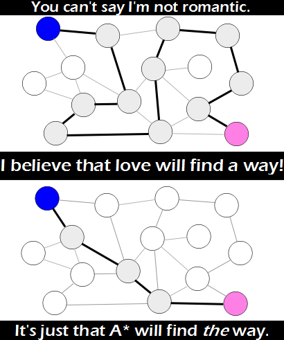

Comic JK 755
When I Feel Like It
⇤
<
?
>
⇥

⇤
<
?
>
⇥
Forum
.
RSS
.
Digg
.
Facebook
.
Reddit
.
Twitter
.
Stumbleupon
Enter your thoughts on number 755 here. Please, no spamming, trolling, phreaking, or finding romance through breadth-first traversal. Your mother found the shortest path into my pants. So, Artificial Intelligence finding the shortest path....to love o.o? >The only winning move is not to play. >>That made less sense then my comment....to me anyways <.< >>>Go rent and watch WarGames. >>>>That wouldn't make it make any more sense. Yay, XKCD refrence I actually get. Do the pink and blue nodes try to find the path by brute force the first \\time then, after meeting, share information to make finding the path easier the second time? What if the graph's not connected? D: >That would be sad :( >>Then it was never meant to be, besides Dijkstra all the way!! Assuming nodes/links are of equal weight, surely there are 2 equivalent ways. Or is this a geographical representation, meaning that the shortest path is based on link length? >I assumed that edge weights were omitted for clarity. I guess it depends on what the edges actually represent. Acquaintence? Romantic involvement? Physical proximity? >> Hotness? Wouldn't a directed graph be more appropriate? [gem] 3 nodes, 4 links. But I thought there were 6 degrees of separation? > Apart from the fact that this may be false: It does not say that you cannot have direct friends ;) >> correct. 6 degrees implies 'up to 6 degrees' how do you play this game? i keep clicking on the nodes and nothing changes, i think it's broken! >"Heh-heh-heh-heh-heh. Surely you're joking..." >>I am joking, and don't call me Shirley! >>Nothing changes? Clicking brings you to another comic! Hmmm. So today's men are lucky to have been born before strong AI emerges? Who would have guessed that Skynet's strategy would be to "conquer" 'em all. > If strong AI is going to spend its time finding love graphically, I don't think future generations are going to have too much to worry about. >> Remember that AI's internal representation is only a means for reaching its goals... It would only solve love graphs to outcompete men. So there would be one last human generation, all straight men despairing, all straight women having crazy wild... Whatever they actually like.